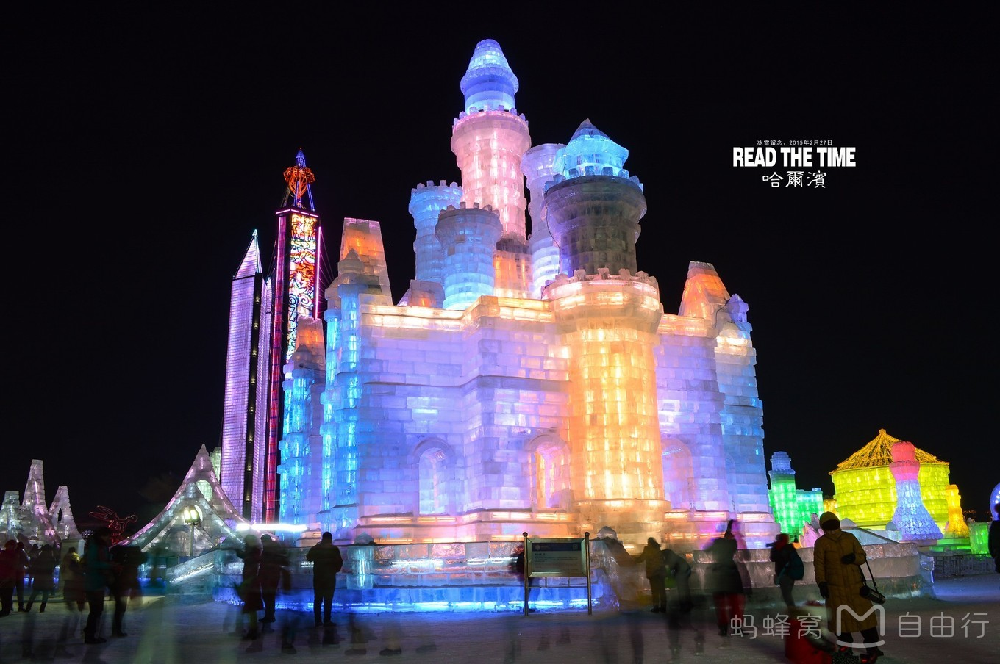
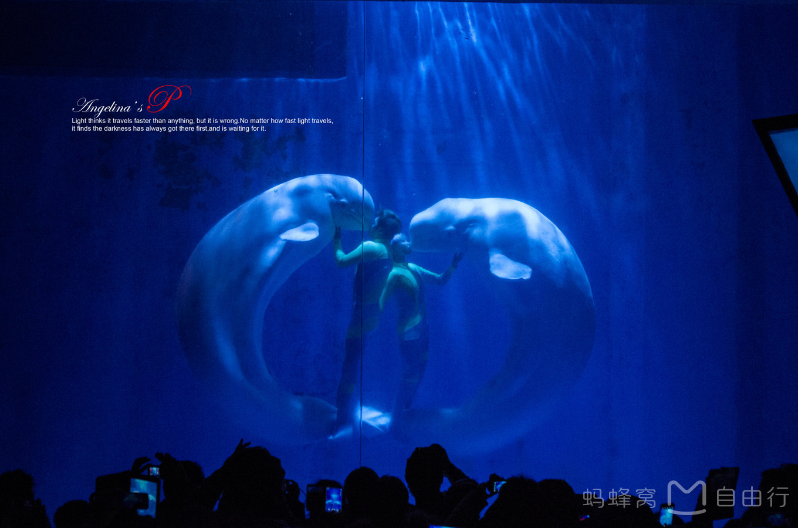
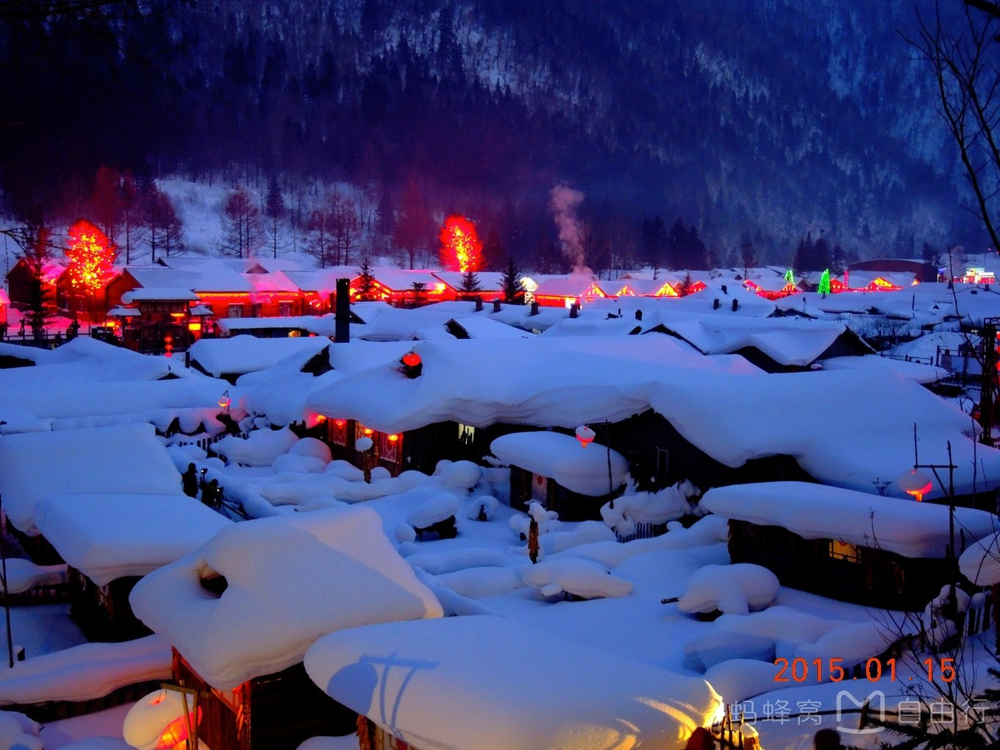
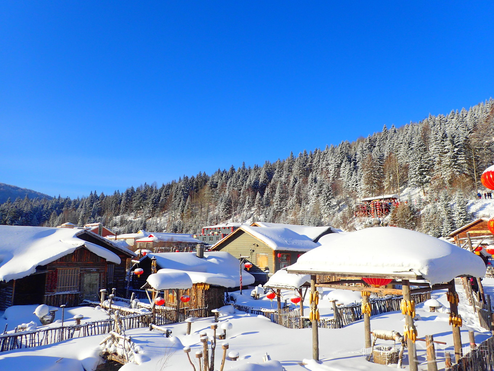
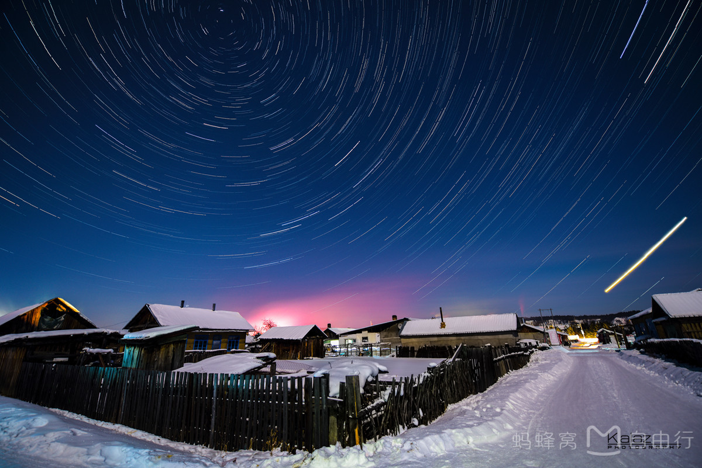
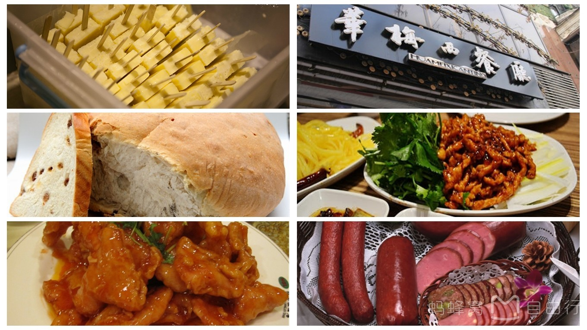

一、

冰雪大世界-哈尔滨必玩
冰雪大世界位于哈尔滨市区太阳岛，很有名的景点，是每年哈尔滨最热门的旅游项目之一，它的冰雕原材料都是取自松花江，由此雕成各式各样栩栩如生的冰雕，巧夺天工的冰灯。最不能错过的就是冰滑梯，急速下滑会带给你不一样的刺激。世纪大钟也一定要看，据说每一个看到的人都会讨一个新年的好彩头哦。门票：成人票分为平日票和节日票两种价格，平日票300元/张(元旦、春节、正月十五及国家规定的节假日除外)；节日票330元/张(元旦、春节、正月十五及国家规定的节假日期间)。优惠票票价为160元/张。 开放时间：9:00~21:00 。白天票9：00—12：00，晚间票12：00—21：00（建议16:30后入园游玩，景区的全部景观在16:30亮灯）
Tips： 冰雪大世界很漂亮，但里面温度也是相当相当低，而且多数时间都是在室外，所以一定要多穿衣服，能裹多厚裹多厚，尤其是晚上去看冰雕的。
赞
二、

哈尔滨极地馆-观看海洋之心表演
极地馆靠近太阳岛公园，是世界首座极地演艺游乐园，哈尔滨国际冰雪节三大景区之一，国家4A级旅游景区，中国首家以极地动物娱乐表演为主题的极地馆。被全球最大旅游网站“Trip Advisor”评选为“全球杰出景区”。这里有世界唯一极地白鲸水下表演秀，中国第一美女驯养师与白鲸米拉共同演绎的感动世界的梦幻传奇——“海洋之心”，强烈推荐，满满的少女心。还有很多其他的极地动物，也是萌萌哒～ 成人票：130元，学生票：110元。
赞
三、
地地道道玩雪乡-童话世界般的东北小村庄
1.如何到达雪乡 从哈尔滨去雪乡有两种方式，可以选择拼车或包车，也可以选择自己乘坐旅游大巴。人多的话包车还比较合适，人少的话包车就比较贵，可以在网上寻找拼车的朋友。 自己乘坐大巴有两种线路：1、哈尔滨至亚布力滑雪度假区线路车程3个小时，单程票价55元，每天三班车，每天6:00、10: 00、13:00从道里九站街发车，9:20、12:50、15:20从亚布力发车返程。 2、哈尔滨至雪乡森林公园景区线路车程5个小时30分钟，单程票价120元，每天三班车，6: 00、10:00、13:00从南岗客运站发车，6:30、10:30、13:30从道里九站街发车，7:00、10:30、13:00自雪乡返程。 2.去雪乡的最佳季节 12月-次年3月为雪量最大期，雪景最美，适合参与雪上活动。 12月初游客并不多，雪乡羊草山顶雾凇和日出会很漂亮。雪乡旅游娱乐项目如滑雪，滑雪圈，马拉爬犁等刚刚启动价格优惠。喜欢清净的人可以选择这个时间来雪乡旅游。 12月中下旬是雪乡的旅游旺季，屋檐雪挂和雪蘑菇在大自然的雕塑下全面展现出来。 从正月初一到初七雪乡旅游餐住费用会涨价，娱乐项目也涨的离谱。不推荐此时去游玩。 春节后直到3月中旬雪乡都可以赏雪。每年的2月-3月是雪乡降雪最频繁最大的时候，这个时候是雪乡摄影的最好时节。此时雪乡游客少，雪景破坏少，屋檐雪挂又最大，气温回升，非常适合在雪乡小住几日慢慢品味雪乡的魅力。 3.雪乡住宿 东北农家的特色就是炕，雪乡更不例外。这里的热炕头很暖和，冬天是雪乡的旺季，所以价格肯定略贵，去之前最好在网上提前预定房间。 4.雪乡门票 80每人。军官证、学生证等半价。提醒大家一定要保管好门票！出雪乡、爬秃顶山等都需要出示门票，否则会被当作逃票，要求补票的，又要花80～另外，进去后一些项目都是单独收费的，并不是花了80就随便玩喔。 5.雪乡玩点 1、梦幻家园：是集吃住玩乐于一体的综合园区，位于雪乡雪韵大街西侧，总面积六千多平方米，园内有十余年来拍摄影视剧的影视群落，也有“东北民俗十八怪”等民俗文化展示。（另收票价30） 2、秃顶山看日出：秃顶山看日出可以前一天晚上在旅馆老板那报名，据说不同旅馆报价是不同的，可以提前问价。看日出收的价钱是巴士 雪摩托，如果自己爬山的话，大概需要一个半小时。需要注意哦~秃顶山在雪乡之外，所以需要保留好雪乡的门票哦~否则需要再买门票哦~ 3、羊草山：位于雪乡西北角，因被茂密的大叶樟草所覆盖由此得名。这里是全国众多驴友穿越的首选地，每年都有数万人从这里徒步穿越雪乡，也是众多摄影爱好者最钟爱的好地方。 在雪乡，你可以感受到小时候过年的感觉，一到晚上，红红的灯笼加上街上热闹的人们，街边上有卖糖葫芦的，冰柿子的，马迭尔冰棍儿的，一秒把你拉到小时候过年撒欢儿的场景，此刻你可以在街边租个小拉车，跟你的小伙伴尽情的在街上玩耍，但是 要注意安全哟，可不要玩疯了撞到别人~~摔一下也是怪疼得~~ 在雪乡晚上也可以去看二人转，去东北不看二人转确实有些遗憾，推荐两个地点去看：一个是雪乡剧场；另一个是梦幻家园。梦幻家园的容量就小一些，喜欢清净点的、人少点的可以选择这里；雪乡剧场就比较大了，人也比较多，价格都是一样的，都在150左右。 白天可以去雪乡的梦幻家园玩，可以在里面玩滑雪圈，看武术表演，上观景台，看雪乡的全貌，厚厚的白雪给雪乡的木屋带上可爱的小帽子，屋前的雪蘑菇一朵朵映入眼帘，简直美不胜收！
Tips： 不论怎么去，路上的交通加短暂的休息都要一天的时间，路上记得带点吃的。雪乡建议游玩时间两天一夜，毕竟这个地方不大，两天基本足够了。可以先去亚布力，然后去雪乡，亚布力滑雪还是很好玩的，但是一定记得提前预定，人太多。 在这里我要提醒亲们一点：一定要给手机贴上暖贴，带上充电宝，不然在这么冷的天气的雪乡，你的手机会不听话的停止工作的，一不小心就断电了或是用了没几分钟就没电了~这都是正常的~所以也要给手机也做好保暖措施哟~
赞
四、
漠河北极村-比北方更北
个人觉得这里比雪乡值得期待，北方的北方，听起来就很激动。北极村不大，这里有北极哨所、七星广场、北极广场、中国北极点、最北邮局、北望亚口广场、中俄边境——黑河。北极村的好玩在于它可以叫你体验下什么是零下四十多度的环境，睫毛上的蒸汽都会变成小冰滴，有的人甚至眨眼睛都觉得疼痛。所以一定一定要穿的比哈尔滨还要多，毕竟是中国最北端。尤其注意的是皮肤不能触碰金属，会冻住，拍照一定小心。
赞
五、
哈尔滨周边线路最优组合
黑龙江很大，由于很多人时间有限，不可能所有景点都去体验，下面是我整理的几条合适的线路，推荐给小伙伴们～ 线路1：俄式风情，哈尔滨市区——中央大街——俄罗斯风情园等。 线路2：雪景，哈尔滨——亚布力——雪乡——哈尔滨。 线路3：最北漠河，哈尔滨——漠河——北极村——哈尔滨。 线路1可以和线路2或3随意组合。
赞
六、
舌尖上的大东北
想想就来劲的哈尔滨美食啊，必须安利给大家！这个充满俄罗斯风情的城市美食可以大致分为两大类，中餐and西餐。 中餐：①东北炖菜：杀猪菜、猪肉炖粉条、小鸡炖蘑菇、土豆炖大鹅......这种殿堂级的美食虽然看起来不精致，可是一开饭整个人都不好了，来碗米饭就能上天。没有东北乱炖的冬天一定是不完整的。东北的大锅炖真是像他们的人一样，实在又豪爽。路边随便一家味道都很好，推荐哈尔滨三中对面的“大丰收”，是一家带有浓郁东北特色的菜馆，一进门就有人喊“且来了”（东北话，客人），满满的东北情怀。 ②烧烤（烤肉）：那可真是满大街遍地都是，随便吃一家味道都不错！哈尔滨有句话说的好：“大金链子小手表，一天三顿小烧烤。”可以想象到烧烤对东北人来说多么重要了。顺便安利一下，能喝酒的一定要搭配哈尔滨啤酒，特别推荐小瓶装的啤酒，口感非常好，秒杀啤酒配炸鸡。 ③哈尔滨红肠：这种具有百年历史的灌肠原本来自俄罗斯，味道qiao好吃。秋林干肠、思道司、肉联红肠最为有名，在秋林商场、南岗奋斗路副食品店都能买到。（这个在玩的时候买几根解解馋就好了，等到回程的时候再大采购带回去就好啦） 西餐：①俄式西餐特别推荐中央大街上的华梅西餐厅，一定要在2楼吃，很棒的建筑，价格还可以。 ②大列巴、小沙一克俄式面包，秋林公司和道里中央大街上的马迭尔宾馆的都很不错。 ③其他俄式食品：俄罗斯带榛子的巧克力、俄罗斯香烟、伏特加。